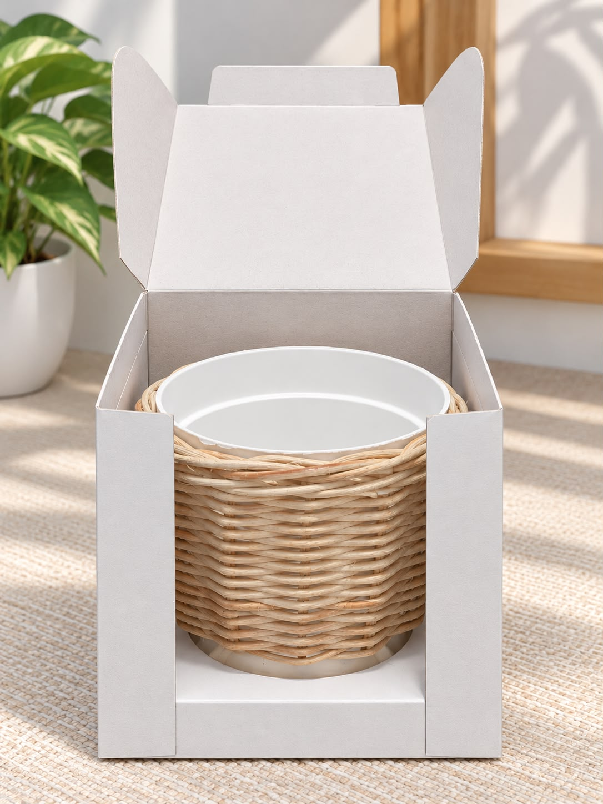
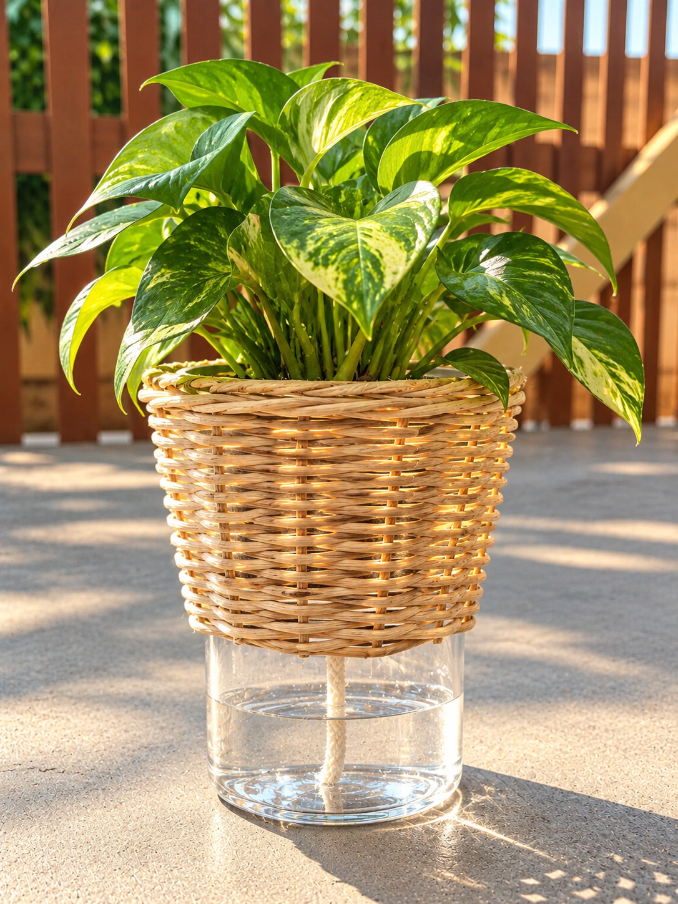

Isi Wadah Air
Isi wadah penampung air dengan air secukupnya, sesuai kapasitas wadah.
HYDROPOT NUSA merupakan inovasi pot tanaman yang memadukan keindahan kerajinan Nusantara dengan sistem penyaluran air otomatis secara pasif melalui sumbu. Dengan desain berbahan rotan yang alami dan estetik, HYDROPOT NUSA hadir untuk mempercantik ruangan sekaligus membantu memenuhi kebutuhan air tanaman dengan lebih praktis.
Lihat Cara Penggunaan
Keindahan alam dalam sentuhan kriya Nusantara.
MENGENAL PRODUK
Perpaduan kerajinan Nusantara dan inovasi perawatan tanaman.

HYDROPOT NUSA adalah pot tanaman yang menggabungkan unsur budaya Nusantara dengan inovasi sederhana untuk perawatan tanaman. Bagian luar pot menggunakan material rotan dengan sentuhan desain khas Nusantara yang dikemas secara modern agar cocok digunakan sebagai dekorasi rumah.
Pot ini dilengkapi dengan wadah penampung air di bagian bawah dan sumbu yang membantu menyalurkan air menuju media tanam secara perlahan. Sistem ini bekerja secara pasif tanpa memerlukan listrik atau pompa, sehingga dapat menjadi alternatif praktis dalam memenuhi kebutuhan air tanaman.
Material rotan dengan tampilan alami.
Menyalurkan air secara pasif menuju media tanam.
Tidak memerlukan pompa untuk menyalurkan air.
PANDUAN PRODUK
Ikuti langkah-langkah berikut agar sistem penyaluran air HYDROPOT NUSA dapat bekerja dengan baik.
Isi wadah penampung air dengan air secukupnya, sesuai kapasitas wadah.
Pastikan sumbu terhubung dengan air di wadah penampung dan bersentuhan dengan media tanam.
Letakkan tanaman pada pot bagian dalam yang telah diisi media tanam.
Pastikan posisi tanaman dan sumbu tetap sesuai agar proses penyerapan air dapat berlangsung dengan baik.
Periksa kondisi media tanam dan ketersediaan air secara berkala.
Tambahkan air kembali ketika persediaan di wadah penampung mulai berkurang atau habis.
PERAWATAN PRODUK
Perawatan yang tepat membantu menjaga fungsi produk dan kondisi tanaman.
Periksa air di wadah penampung secara berkala. Pastikan sumbu tetap bersih dan dapat menyerap air dengan baik. Jika sumbu kotor atau rusak, bersihkan atau ganti sesuai kebutuhan.
Bersihkan bagian luar pot menggunakan kain atau sikat lembut. Hindari kelembapan berlebihan pada bagian rotan agar material tetap terjaga.
Periksa kondisi tanaman secara rutin dan sesuaikan perawatannya dengan jenis tanaman yang digunakan.
Meskipun menggunakan sistem penyerapan air melalui sumbu, tanaman tetap perlu diperiksa secara rutin agar kebutuhan air dan kondisi pertumbuhannya tetap terjaga.